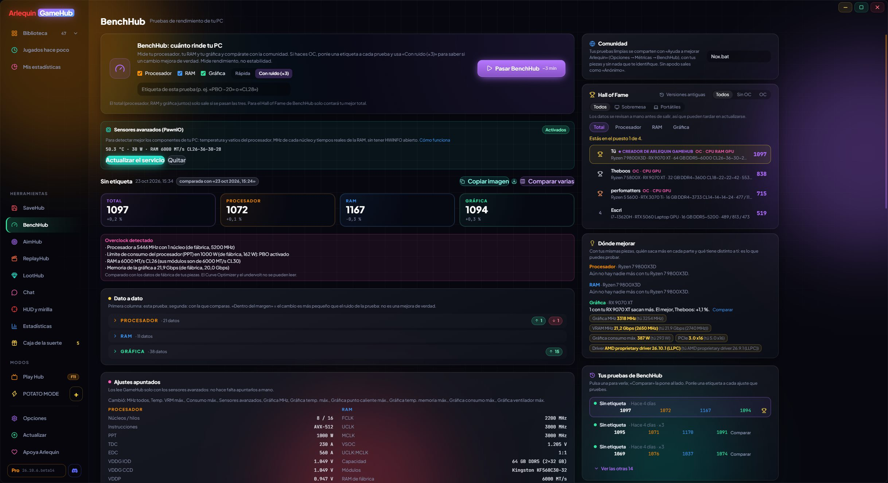

BenchHub：あなたのPCの本当の速さ
プロセッサ、RAM、グラフィックスのテストと、コミュニティと比べられるHall of Fame。
BenchHubはプロセッサ（各コア、全コア、コア間レイテンシ）、RAM（速度、レイテンシ、そのカーブ）、グラフィックスカード（全員同じ3Dシーンで、1080p・1440p・4K、さらにPCIeとResizable BAR）を詳しくテストし、足を引っ張っているもの（熱、電力制限、XMP/EXPOが無効なRAM、遅いスロットに挿したグラフィックスカードなど）を教えてくれます。オーバークロックしている場合は、テストにタグを付けましょう。BIOS設定は自動で記録され、変更が本当に効果的か誤差の範囲かを判定し、最大4つのテストを同時に比較し、同じパーツを使っている人と比べて改善できる点を示します。
共有したクリーンなテスト結果は、選んだニックネームまたは「匿名」でHall of Fameに表示されます。
CPU、RAM、グラフィックスカードがオーバークロックされているかを検出し（専用のタグとHall of Fameでのフィルター付き）、1000点になるPC（標準構成の基準PC）を教えてくれて、結果をシェアできる画像も作れます。
各結果と「比較」の各値には、何を測っているかが下に書かれ、ⓘボタンでその結果になった理由が分かります。プロセッサ、RAM、グラフィックスカード、Windowsの各設定にもそれぞれⓘがあり、何のためのものかを説明します。
テスト中、マザーボードのファンを固定（50〜100%）にでき、終わると元の状態に戻ります。現時点では一部のMSI製マザーボードのみ対応です。Hall of Fameではニックネームのある人が先に表示されます（「すべて」で匿名の人も表示）。
使い方
- BenchHubはサイドバーのHubsの中にあります。
- 先にゲームや重いプログラムを閉じてください。測定中はGameHubが邪魔をしないよう控えます。
- Hall of Fameに載るには：オプション → プライバシーとデータ → BenchHub。
